Constraining and Locking Data
There are a million reasons for implementing CPM systems like OneStream, but the core reason is really summed up by one phrase – data integrity.
Data integrity means having complete, accurate data (i.e., both correct and valid) that is consistent when accessed by different stakeholders. At the end of the day, it doesn’t matter how nice your dashboards are, or how streamlined your workflows are, if your underlying data is unreliable. Of course, this is especially important when dealing with critical financial data and the threat of audits.
While one aspect of being an admin is ensuring your users have a seamless, pleasant experience, the other aspect is protecting users from themselves as they cause havoc, break your database, and email you at 5pm on Friday. To accommodate this need, OneStream provides a variety of methods for securing your data and guaranteeing data integrity. The purpose of this chapter is to cover these methods, which we have separated into two major categories: system-level controls and process-level controls.
As an added bonus, if you’re here because you cannot figure out why a cell is flagged as invalid or read-only, then this chapter can also serve as a checklist for figuring out the root cause.
Constraining and Locking Data
System-Level Controls
The system-levels control approach is to apply constraints directly onto your data by applying settings which enforce which intersections are valid. Since OneStream has so many related settings, the goal here is to collect the most common and useful options in one place. Something to note is that – while powerful – these options must be used judiciously since they can unexpectedly affect items beyond your initial scope.
Constraining and Locking Data › System-Level Controls
Cube Settings
Constraining and Locking Data › System-Level Controls › Cube Settings
Dimension Settings
Cube dimension settings can be accessed on the Cube Dimensions tab of your cube. These are the most universal controls you can apply and should be the first level you consider when constraining your data.
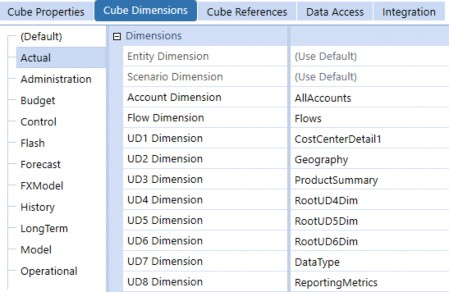
Figure 9.1
As an admin, there’s a good chance the cubes in your application have already been configured. However, it’s still critical for you to understand the implications of how dimensions are assigned. For the mechanics of modifying cube dimensions, refer to the Configuring Cubes section in Chapter 4: Metadata Management.
When you assign a dimension on the cube, OneStream will only allow you to write data to the members within that dimension; this means you’ve constrained your cube and effectively set which members are valid. This applies to all data, regardless of the source – data loads, manual inputs, calculated data, etc. This is useful because these settings guarantee you do not end up with incorrect or invalid data intersections.
This concept is closely tied to extensibility. By allowing you to assign different dimensions by cube and by Scenario Type, OneStream allows you to get extremely granular with how you constrain your data. For more details on extensibility and cube design, refer to the Foundation Handbook.
Constraining and Locking Data › System-Level Controls › Cube Settings › Dimension Settings
Use Case 1: Assigning Dimensions
Suppose you have two business entities, each with their own cube: NorthAmerica and Europe.
Let’s say you want to guarantee that NorthAmerica cube data only gets tagged with North American products, and European cube data with European products. To accommodate this, you could use UD3 as a product dimension and create two separate dimensions Products_NA and Products_EU. By assigning each of these product dimensions to their respective cubes, you have specified which products are valid for each cube.
With this setup, if an EU user tried to submit data to the European cube tagged with a North American product, they would get an error. Furthermore, if a power user tried to create a form to input data there, the cell would show up as an invalid cell, again preventing invalid inputs.
Constraining and Locking Data › System-Level Controls › Cube Settings › Dimension Settings
Use Case 2: Assigning Root
A special use case is that you can “disable” a dimension by assigning root to it (e.g., RootUD1Dim). By assigning root to a dimension, you are essentially constraining that dimension such that only the None member is valid: this is because None is the only member in each of the root dimensions.
Note: Technically, the dimension is still enabled as far as the system is concerned, so you would still have to handle it when setting up data sources and transformation rules. It’s only “disabled” in practice, since you’d never see values loaded to anything other than None. |
Constraining and Locking Data › System-Level Controls › Cube Settings
Integration Settings
You can disable dimensions on the Integration tab of your cube by selecting a dimension and setting the Enabled field to False.
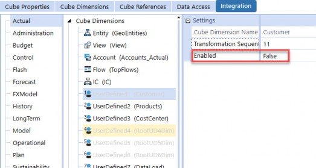
Figure 9.2
It’s important to note, however, that the Integration tab only affects how data is loaded to this cube through workflows. While it’s a common misconception, disabling a dimension on the Integration tab does not make this dimension invalid across your application. Pre-existing data tagged to disabled members does not get cleared, and users would still be able to write data to the “disabled” members.
When you disable a dimension through the Integration tab, three things happen:
When data is loaded through an Import workflow, OneStream will ignore whatever dimension is assigned to your data source, and will instead load all data to None for that dimension type.
Going forward, when you create data sources for your cube, configuration for the disabled dimension will not appear as an option.
When configuring transformation rules, you no longer have to specify mappings for the disabled dimension, as there will never be any member source data to transform in the first place.
To summarize, disabling a dimension in integration settings is the same as saying, “I don’t want to load data to this dimension.”
Constraining and Locking Data › System-Level Controls
Entity and Member Constraints
Applying constraints to members is the most direct way of constraining your data. Like the dimension settings on your cube, these constraint settings apply to all sources of data. These settings are available for entity, account, and UD1 members. If you assign a parent member to a constraint field, only the base members under that parent are valid targets.
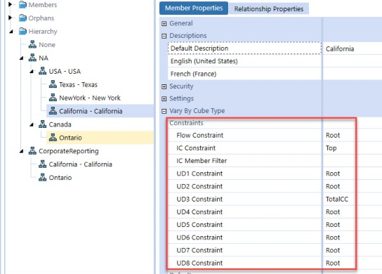
Figure 9.3
For example, here, we’ve assigned TotalCC to the UD3 constraint for the California entity. If you are writing data to California and attempt to tag data to a base cost center that isn’t under TotalCC, you will get an error.
These are great when your constraint relationships are fairly simple but break down when you get to more complicated use cases. For example, if you wanted to apply “compound” constraints where you constrain UD4, based on the current UD2 and UD3, you would be unable to do this. One option would be to create conditional input business rules to accommodate this. Refer to the Conditional Input Business Rules Section for more details.
| Note: The UD1 dimension is special in that no other UD dimensions allow you to apply constraints. |
Constraining and Locking Data › System-Level Controls
Member Allow Input Settings
Accounts, flows, and UD members all have an Allow Input setting. When set to True, this setting allows users to enter data in the following ways:
Load to
O#Importvia Import workflows.Manually enter to
O#Formsvia input forms.Enter journal entries to
O#AdjInput.
Note that this only applies to inputted and not calculated data: even when set to False, data can still be stored via formulas.
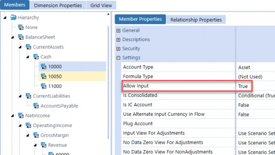
Figure 9.4
Constraining and Locking Data › System-Level Controls
Scenario Input Settings
The Input Frequency and Workflow Tracking Frequency settings work together to control what time periods are valid for a given scenario member.
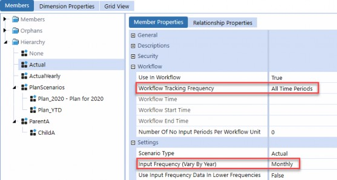
Figure 9.5
Here is a brief description of each setting and their possible values:
Input Frequency: This setting determines which time periods are valid to write data to. If you set it as Monthly, then users may load data to any month. If you set it as Yearly, you would be able to load to 2019, but not to a month like 2019M3.
Workflow Tracking Frequency: This setting controls what periods are displayed to users in workflows, but doesn’t technically apply any constraints on what time periods are valid. For example, if you set the Workflow Tracking Frequency as Yearly, users can only see
years in their Workflow POV. But if the Input Frequency is Monthly, and they had access to a form with monthly inputs, OneStream wouldn’t prevent them from inputting monthly data.
Constraining and Locking Data › System-Level Controls
Conditional Input Business Rules
Conditional input business rules (also called NoInput rules) are the most flexible types of constraints you can apply. At their core, NoInput rules are just regular finance business rules attached to your cube. Whenever data is being written to the cube, the business rule is run once – for each intersection – to determine if that intersection is read-only.
To create a NoInput rule, create a finance rule and add your logic under the FinanceFunctionType.ConditionalInput case block. When run against an intersection as data is being loaded, if the rule returns ConditionalInputResultType.NoInput, the intersection being processed will not be stored, and OneStream will instead throw an error saying the intersection is read-only.
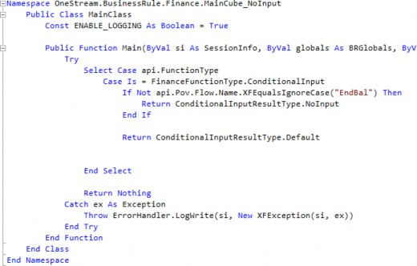
Figure 9.6
Something to note is that, similar to member input settings, NoInput rules only prevent users from inputting data via data loads and manual data entry; calculated data generated by business rule executions will bypass NoInput rules. This is useful as it allows you to combine and layer NoInput rules on top of your calculations to prevent users from overwriting your calculated data.
For more details on creating NoInput rules, refer to the Design and Reference Guide as well as the OneStream Finance Rules and Calculations Handbook.
Note: Because NoInput rules run against every intersection being stored or queried, it’s critical that they are efficient. For example, if you add If you’re seeing significant performance hits, you might want to consider caching data on a BRGlobals object, or even on a user session state, in order to avoid repeating expensive operations potentially millions of times. |
Constraining and Locking Data › System-Level Controls
Account Adjustment Type
The Adjustment Type setting can be found on Account Members and controls how data can be written to an account tagged with the O#AdjInput origin. There are three available values for this setting:
Journals: This is the default value as, traditionally, journals are used to write journal adjustments to
O#AdjInput.Data Entry: This is the setting to use if you want to input data to
O#AdjInputvia Cube View forms.Not Allowed: Setting the Adjustment Type to Not Allowed fully disables inputs to
O#AdjInput.
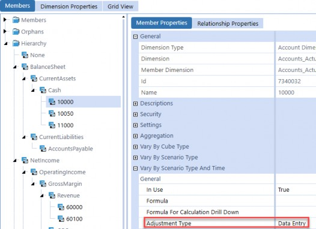
Figure 9.7
Constraining and Locking Data
Process-Level Controls
While the system-level control approach is to apply hard constraints directly to data, the process-level control approach doesn’t explicitly lock any data. Instead, the idea is to control the mechanisms to access and modify data (e.g., workflows and Cube Views). Put another way, this approach applies soft constraints to intersections by selectively giving users access to only the data they need to do their jobs – no more, no less.
To illustrate this approach, if we don’t give a user access to income statement input forms, then there’s no way for this user to accidentally see or mess up that data, even though – technically – nothing at a system level stops them from writing data there.
While not as holistic as system-level controls, process-level controls are a necessary tool and should be used hand-in-hand with system-level controls to enforce data integrity.
Constraining and Locking Data › Process-Level Controls
Background on Security
Before we discuss examples of process-level controls, we need to briefly discuss security, which is ultimately the backbone of process control.
Security settings allow you to control whether a user can access an artifact in OneStream. You could build the most sophisticated workflow processes in the world, but without the ability to selectively lock users out of workflows they shouldn’t have access to, you’re taking a huge risk with your data security and integrity.
In order to limit user access, there are really two settings on OneStream that you’re looking for: 1. Access Group and 2. Read and Write Data Group (as well as Read Data Group). There are other settings, such as maintenance group and manage data group, but those deal with making sure other admins or consultants aren’t modifying artifacts they shouldn’t be (and aren’t pertinent to this discussion).
The level at which you apply security will depend on your business processes; there is no “best practice” here. You might want to limit users at the cube level, dashboard level, or even at an extremely granular report level.
For a more detailed discussion of security, refer to Chapter 12: Securing the Pieces.
Constraining and Locking Data › Process-Level Controls
Direct Data Access
The following settings control which intersections are available to users. Note that the approach here is to prevent a subset of users from accessing a set of intersections; there is nothing technically making these intersections invalid. That said – from a practical standpoint – if no one has write-access to a set of data, that data is effectively completely locked!
Constraining and Locking Data › Process-Level Controls › Direct Data Access
Entity and Scenario Security
Entity and scenario members are part of the Data Unit dimensions, so it’s not surprising that they have additional security settings compared to UD members. In particular, you can set read and write permissions using the Read Data Group and Read and Write Data Group fields.
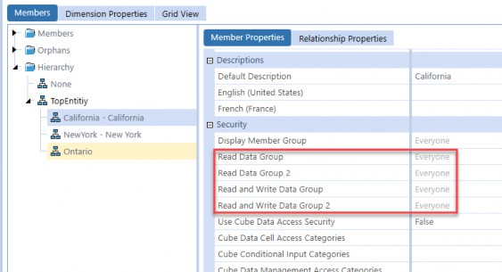
Figure 9.8
An example use-case for this setting would be to assign only California users with write access to the California entity. You haven’t made the California entity invalid; you have just prevented a subset of users from reading data from and writing to the entity.
Constraining and Locking Data › Process-Level Controls › Direct Data Access
Cube Security Settings
Similar to the read/write settings on entities and scenarios, you can configure the Access Group setting on your cube directly to control which users can access the cube data as a whole.
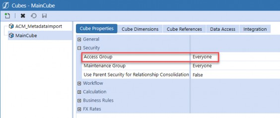
Figure 9.9
For even more granular control over intersections, you can implement slice security by going to the Data Access tab. Again, refer to Chapter 12 on security, for a more detailed discussion of slice security.
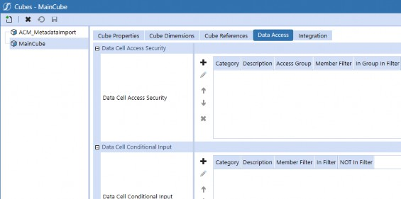
Figure 9.10
Constraining and Locking Data › Process-Level Controls
UI Access
In addition to limiting access to cubes and specific intersections, another approach would be to limit access to the UI elements that allow users to interact with data. The following sections outline the key UI elements that users typically interact with, and each serves as a different level for the application of access controls.
Constraining and Locking Data › Process-Level Controls › UI Access
Workflow Design and Profile Settings
Process control in OneStream is primarily driven by workflow design. Ideally, your users would interact with their tasks and reporting almost entirely through workflows. You can then control user access to data by designing your workflows so that each workflow controls a different set of intersections, then assign the appropriate security group to each respective workflow.
For example, suppose you have a California business unit that should only have access to the California entity and a subset of income statement accounts. You can create a workflow called CaliforniaLoad and assign the California entity and appropriate workflow channel to it. By giving only California users access rights to this workflow and its children, and provided there are no other ways to access these intersections, you have limited these intersections only to the California business unit.
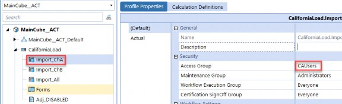
Figure 9.11
This is only one example, but the main idea is that your workflow design must always take security into account, as process flow and read/write access are closely interconnected concepts.
For more details on workflow design and workflow channels, refer to Chapter 6: Work the Workflow.
Constraining and Locking Data › Process-Level Controls › UI Access
Dashboard Restrictions
Dashboards are typically embedded into workflow Workspaces, although they can also be accessed directly through OnePlace. With that in mind, you can restrict access to dashboards that have responsibility for set intersections to limit users’ access to that data.
It’s subtle, but you might want to apply security access at this level – over workflows – in the event that dashboards are shared between different workflows. For example, suppose you have two workflows: CaliforniaLoad and NewYorkLoad, that both share several dashboards, one of which is PNLAdjustments. If you wanted to lock only the California users out of the PNLAdjustments form, then you could change the Access Group of the dashboard to match the Access Group of the NewYorkLoad workflow. By applying these settings, California users would be able to access all other dashboards except for California Load, while New York users retain all of their access.
Constraining and Locking Data › Process-Level Controls › UI Access
Cube View Restrictions
Cube Views are typically embedded into dashboards but can also be accessed directly through OnePlace. With this in mind, you can restrict Cube Views at the lowest level by applying security settings directly on the Cube View Groups.
Additionally, Cube Views have the Can Modify Data setting, which allows you to control whether data can be entered via this Cube View or if the Cube View is read-only. This setting exists even more granularly on individual columns and rows, although these settings are ignored if the overall Cube View is set as read-only.
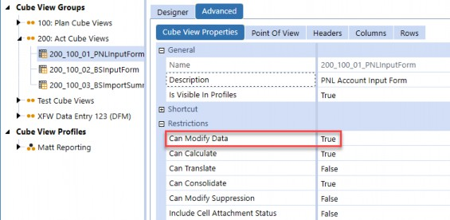
Figure 9.12
Constraining and Locking Data
Conclusion
In this chapter, we covered the two main approaches for constraining your data in OneStream: system-level controls and process-level controls. There are many ways to enforce data integrity in OneStream, so we hope this chapter gives you a framework for thinking about the best way to secure your data. We also hope that it gives you a solid starting point for things to consider when a user is unable to load data to locked intersections, or even worse when they are!
For many admins, business rules are the most intimidating part of maintaining an application, particularly for those who don’t already have a coding background. Business rules, when written poorly (and sometimes even when written well), can be cryptic maintenance nightmares. Honestly, we doubt there is anyone that enjoys getting an email saying a calculation isn’t working properly.
If you’re reading this chapter, it’s likely that you have business rules that you are maintaining or debugging and, if so, then you’ve come to the right place. This book is written with your needs as an admin in mind, and focuses mainly on maintenance and troubleshooting techniques. We also cover some best practices for business rules, to help you write and refactor maintainable code for the sake of future you.
However, we don’t go into detail on writing calculations and the various use-cases that business rules can solve, which is covered in the OneStream Finance Rules and Calculations Handbook. Also, we assume that you have at least some basic exposure to C# or VB.NET, and finance rules through the Admin Training Course: it’s enough that you are able to read basic syntax.
This chapter will cover a lot of fairly technical topics, but we assure you that – as intimidating as business rules can be – everyone can learn to write and maintain good code! With that, let’s strap in and get started.